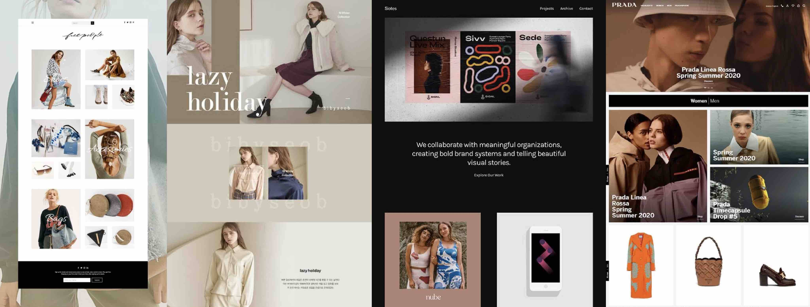
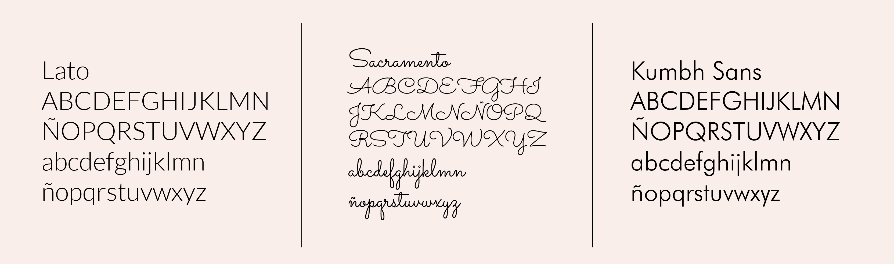
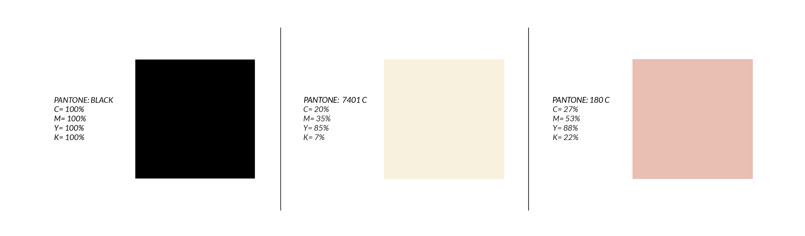

DESARROLLO DEL DISEÑO DE LA WEB
Inspiración del enfoque de diseño
La inspiración para diseñar la página web parte de la observación de las grandes marcas de ropa como Prada, Gucci, Louis Vuitton. En estas se visualizó la estética de la página web, la cantidad de elementos, el nivel de minimalismo que utilizan y la cantidad de blanco de página. Se dejan a continuación algunas de las inspiraciones que ayudaron a diseñar la web.
Tipografías Utilizadas
Para el desarrollo de la página web se utilizaron 3 familias tipográficas distintas. Sus nombres son Lato que es una palo seco elegante utilizada en gran porcentaje, Sacramento que es una caligráfica similar a una manuscrita utilizada en títulos para jerarquizar y la Kumbh Sans que es una palo seco utilizada unicamente en la página interna de la colección.
Paleta Cromática
En cuanto a la croma, se opto por colores neutros y elegantes que hacen alusión al personaje escogido, Edna Moda. Más alla de su aparición en una película de superheroes, es una señora sumamente elegante, de buen porte y seria, por lo tanto, los colores van en sintonía con su personalidad.
